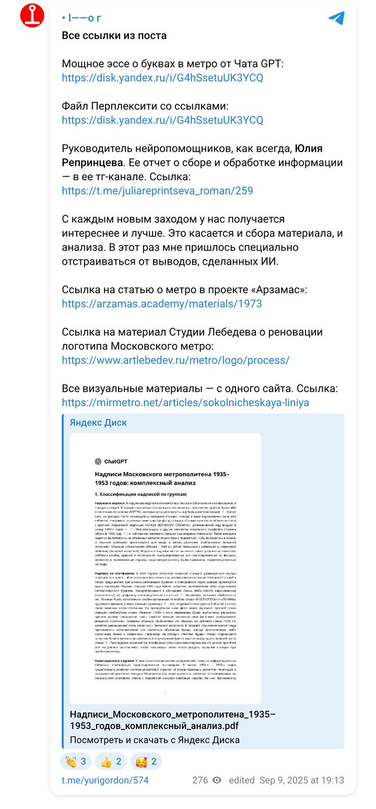
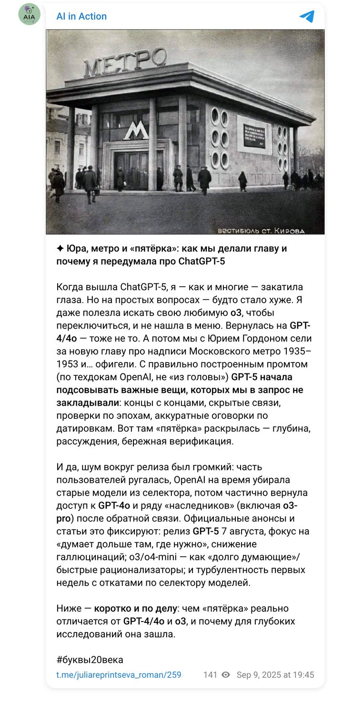
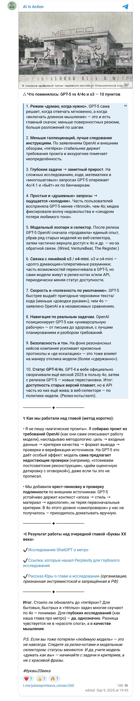
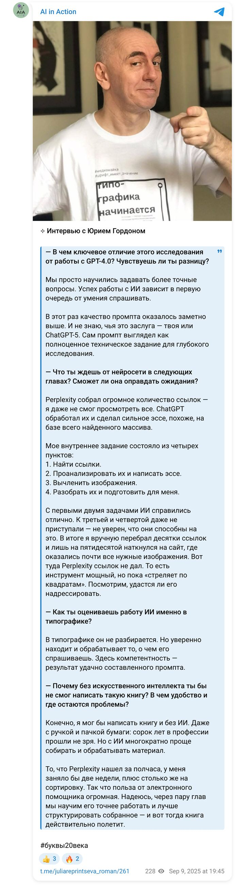

Книга «Буквы XX века» · август — сентябрь 2025 · цикл 03
Проанализировать надписи метро по семи группам — наружные, на платформах, навигационные, памятные, технические, вагонные, временные; определить стилистику, проследить изменения, разобрать тексты по содержанию.
Промпт собран по требованиям OpenAI к GPT-5: цель, входные данные, критерии качества, формат, верификация. Perplexity нашёл 245 источников; GPT-5 написал эссе на 13 страниц с классификацией и оговорками по датировкам — и сам предложил проверки, которых в задании не было.
Perplexity, ChatGPT GPT-5 Deep Research
Ниже — брифы, которые получали модели, готовые отчёты в PDF и документы, а также публикации по ходу работы.
Брифы
Мой документ · текст, который получала модель · 29.08.2025
Провести комплексный анализ надписей Московского метрополитена в период 1935–1953 гг. по группам, стилевым изменениям и идеологическому содержанию с опорой на ссылки из предоставленного документа со ссылками (прикреплён пользователем), а также с привлечением дополнительных авторитетных источников для верификации.
В отчёте явно помечай: какие примеры взяты из документа пользователя, а какие — из дополнительных источников.
Разбей найденные примеры на группы и для каждой группы выведи одним сплошным абзацем: Название группы: перечисление ссылок на изображения/страницы (через запятую). Список групп:
Требования:
- Ссылки должны вести на страницы с изображениями (или на сами изображения). Если источник — статья, но там есть фото, указывай прямую ссылку на блок с фото/сканом.
- Если одно изображение подходит сразу к нескольким группам — оставь в приоритетной группе и дай перекрёстную отсылку («см. также …»).
Для каждой группы опиши эволюцию стиля в 1935–1953 гг.:
Проанализируй содержательные формулы и риторику надписей:
Выводи одним документом на русском языке в таком порядке:
Вставляй ссылки в строку (не сноски), чтобы их можно было кликнуть. Не используй таблицы. Язык — строго русский.
Результаты
Документ проекта · 29.08.2025
Основным знаком московского метрополитена с момента открытия в 1935 году стала красная буква «М» с характерными засечками. На входах в метро размещались световые надписи «МЕТРО», которые изначально были мужского рода, поэтому в советских плакатах звучали как «Наш метро — лучший в мире!».
Оригинальные названия 1935 года: «Дзержинская» (ныне «Лубянка»); «Дворец Советов» (ныне «Кропоткинская»); «Кировская» (ныне «Чистые пруды»); «Площадь Свердлова» (ныне «Театральная»).
Мемориальная табличка военного времени: на семи станциях, построенных в 1941–1945 годах, установлены памятные таблички «Сооружено в дни Отечественной войны»: «Новокузнецкая», «Павелецкая», «Автозаводская», «Семёновская», «Бауманская», «Электрозаводская», «Партизанская».
«К поездам», «В город», «Стойте справа, проходите слева».
«Вся Москва строит метро» (1934); «Наше дело правое — мы победим» (военное время); «Советское — значит отличное!» (реклама 1950-х).
«Великому, родному Сталину, инициатору и вдохновителю строительства метро — пролетарский привет» («Сокольники»); «Партизанам и партизанкам слава». Значок «Метро имени Л.М. Кагановича», 1935.
Московское метро 1935–1953 годов представляло собой не только транспортную систему, но и масштабную идеологическую площадку, где каждая надпись, мозаика и лозунг несли важную смысловую нагрузку.
Публикации
Посты Юрия Гордона об этой главе и мои отчёты о работе над ней — в хронологии. Снимки постов сохранены на случай удаления; рядом — ссылка на оригинал.



